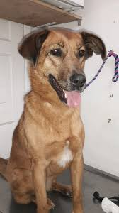

-
Tomas y Jordan
Estos preciosos cachorritos tienen 4 meses de edad y esperan por amigos con quien jugar. Se entregan vacunados y desparasitados.
-
Hermanitos
Son tres perritos y dos perritas muy tiernos y cariñosos que buscan hogares responsables y cariñosos.Se entregan vacunados y desparasitados
-
Kaiser
Es uno de nuestros perros rescatados, es muy noble y obediente, quiere una nueva oportunidad de pertencer a un hogar.
-
Yaco
Este cachorrito tiene 8 meses y busca un hogar que cuide de él. Se entrega vacunado y desparasitado
-

Loky
Este perrito fue traído por su amo ya que no podia seguir cuidando de él. Es leal y juguetón.
-
Martina
Martina tiene 2 años, le gustan los niños y es muy cuidadosa con ellos, Espera poder encontrar un hogar con uno.